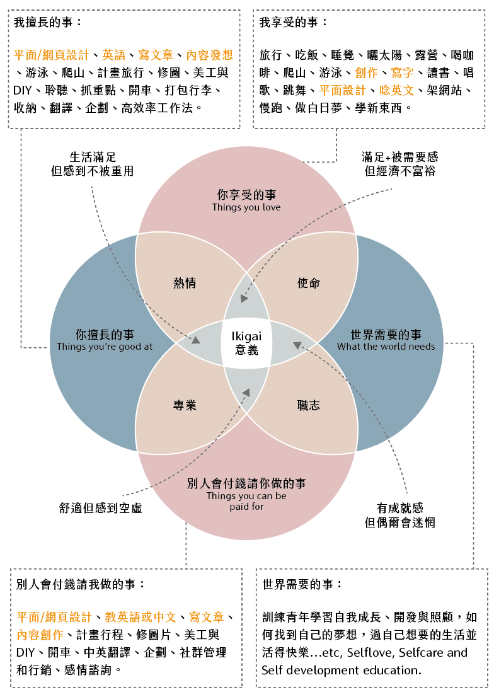

《工作必須有錢有愛有意義》讓迷惘的你，找到理想人生

目錄（4 個段落）
引導你找到自己的興趣與志向，培養對生活與工作的熱情
自從去年初 COVID-19 疫情開始後，扣除上班的時間，待在家的時間變多變長了，思考人生的機會變多了，某天也是突然有種危機意識感「如果在這種時機轉職，會是怎樣呢？」這個人生申論題時常在我的生活中出現，因為我有一顆不安於現狀的心，時常在想如果某件事有變化會怎樣，雖然有時候是庸人自擾，但也許也是一種未雨綢繆，就因為自己這種個性吧，嘗試過很多事情很多工作，但你永遠不可能依賴著工作過生活，所以人生必須要有別的選項，而不是只有工作！
圖片出處：佐依・理想生活設計＆自主學習 社團 https://www.facebook.com/groups/zoeyk.co
上週把 佐依Zoey 的 工作必須有錢有愛有意義！：把喜歡的事情做成事業，成為斜槓、創業者的提案 快速瀏覽一遍，書裡面真的超多乾貨資源，佐依也舉了很多自己與朋友例子，讓處於迷惘世代的你，或想要找尋自我與建立品牌時，可以有所依據有所參考，而這本書最大的特色就在於
引導你找到自己的興趣與志向，培養對生活與工作的熱情，把興趣進化成滿意的收入，讓工作對齊你的理想生活！
我從書裡摘錄了幾個我自己覺得受用的以下幾個章節，來跟大家做分享
擁有成長心態，一年成長翻倍
在這個章節很有趣的是，心態的轉換會影響結果，若一開始就抱持著一定要成功或一定要成長，那最後的結果會是成功或成長；若一開始抱持著不肯定的態度，那最後的結果肯定會是不理想的狀態！這也很刻意練習以及原子習慣有所相關，每天進步1%，一年就強大37倍的成果，這就是成長心態的核心，必須堅定信念，這都是相輔相成的！我們真的不必很厲害才開始，但必須開始了，才有機會變得很厲害。就像現在我的目標是朝前端工程師邁進，如果我都不開始，怎麼會知道最後的結果呢？又或許可能會出現另一種職涯選項也說不定，因為前進的這個過程與心態，關乎著最後的達成結果！
在我的工作經驗裡，看到許多前輩有鑑於平面設計會有薪資天花板的原因，紛紛開始找出路、找有更多發展的空間，我也開始找可以與我的專業結合的另一個領域，像在去年2020年初我就開始規劃前端學習，於是我訂下計劃與目標：
2020 年度規劃＆目標 - 【 突破同溫層】 01月 - 12月 前端 & 設計學習
01月 六角學院 ( HTML & CSS )
02月 六角學院 ( HTML & CSS )
03月 六角學院 ( HTML & CSS )
04月 台大資訊訓練班 ( 網頁設計基礎班 )
05月 Hahow ( Github page 課程 )
06月 文化大學 ( 剪輯課程 AE/PR )
07月 Hahow ( 安妮與陳 課程 )
08月 台大資訊訓練班 ( 網頁設計進階班 )
09月 六角學院 ( jQuery + RWD + Bootstrap )
10月 六角學院 ( 切版直播班 10/16–12/4 )
11月 六角學院 ( 切版直播班 10/16–12/4 )
12月 六角學院 ( 切版直播班 10/16–12/4 )
在一月時只會超級幼幼班簡單的html語法，到年底十二月時已經可以切版了，甚至學會一些RWD跟BS4，這是最大的成就感，一開始就堅定信念，結果一定會豐碩而歸！
當然，一開始不能訂一個遙不可及的目標，必須先訂定一個大方向，再循序漸進地建立與達成每個小任務，這過程獲得的成就感遠超過37倍，這就是為什麼要訂定年度計劃的目的所在了！
雖然目標還沒達成，而我持續在進行的年度規畫在前幾篇也有講過，一切都還在努力中，相信一年後又會再強大37倍以上！
最低可行性產品（Minimum Viable Product , MVP）
MVP 這個目的在於
可以在使用最小資源的情形下確認和產品相關的假設。
加速學習。
減少開發設計時間的浪費。
儘早讓早期客戶拿到產品。
作為其他產品的基礎。
建立可以產出需要產品的能力。
這本書的內容有提到創業中的最低可行性產品（Minimum Viable Product , MVP）也跟我的斜槓副業很像，我一開始也是先丟產品到 市集 / IG / FB 去試水溫，跟消費者第一線接觸，可以慢慢發現新商機與新市場，一邊進行優化或是研發新品，漸漸的建立起與消費者的信任度與情感連結，最後放上電商平台開始販售！
而我的品牌在2018年開始經營，到現在2021年開始小有起色，這段期間讓我明白原來品牌是需要時間發酵與經營的，我記得第一年Pinkoi上架時，沒有任何訂單，也可能自己對於平台操作或是社群行銷不熟練導致，覺得很挫折沒信心，接著我就開始半放棄狀態的佛系經營了，直到2019年開始有第一個訂單，我開始感到：哦~原來我的產品開始也有人欣賞了！心裡感到非常激昂與開心！
當然，除了線上平台的販售，我們也會去市集曝光，與消費者第一線的接觸，這樣一方面可以知道消費者喜歡什麼、可能會有什麼需求以及該優化的地方，所以我也是常把一些半成品放在市集展示，問問客人的意見或是建議，這樣也是一個很不錯的訪談方法 XD
聽過「Ikigai」嗎？讓迷惘的你，找到理想人生
這本書最讓我感到有興趣的是這個主題 ：「Ikigai」！在看到這本書之前，印象中六角學院洧杰老師的文章裡好像也有提到過 ( 整個很愛看洧杰老師的文章，每次看完都有滿滿正能量 )，就去找了一下，就是這篇 工程師如何結合興趣，探索個人發展 https://w3c.hexschool.com/-30-/c9e1fa83
Ikigai的意思是用來描述人生的意義、活著的意義，可以用四個觀點來看這張圖：
別人會付錢請你做的事？
你享受做的事？
你擅長的事？
世界需要你幫忙的事？
應該大多數人都是第一類「別人會付錢請你做的事」，因為這是滿足生活的第一步，要達到第一步才有辦法進到第二步，這是循序漸進的！因我自己也是平面設計師，所以參考了這張佐依的藍圖，這四件事與生存意義的關係！

圖片出處 引用自 Ikigai graphic (2.0) made by Zoey.K https://zoeyk.co/ikigai/
【 你享受的事＋世界需要的事 = 使命 】
【 世界需要的事＋別人會付錢請你做的事 = 職志】
【 別人會付錢請你做的事＋你擅長的事 = 專業 】
【 你擅長的事＋你享受的事 = 熱情 】
目前盤點自己的 「Ikigai 」只稍微達到了「專業」與「熱情」，剩下的兩項與世界需要的事有關係，而這項我還在思考著 … 我能幫助到社會嗎？該如何將自己專業或興趣與這世界有所連結？我也還在學習！
你的「Ikigai」只有你自己才知道， 嘗試摸索看看，一定會找到！
要達成 「Ikigai 」的關鍵要訣：
從小細節開始學習與專注
釋放真實的自我
達到和諧的生活與可持續發展的興趣
熱愛生活大小事
最重要的是活在當下
好吧，說了這麼多，我們回歸到這本書的書名「工作必須有錢有愛有意義」，其實在這裡就可以知道自己是否正在打造理想生活：
有錢 -> 有滿足生理需求嗎 ? 有愛 -> 是否達到心理層面需求 ? 有意義 -> 自我實現了嗎 ?
若都是不理想的狀態，就針對自己想要優化的部分作出調整，目前我自己的部分是 - 想改善生理需求「有錢」，也就是說工作的部分必須被優化，說起來很現實，但這真的是生存的必備條件，生理需求是推動行為最大的動力，也是激勵因素之一，必須達到後再來談心理層面「有愛」以及自我實現「有意義」！希望2021年年底前可以達到「我的理想生活」！
參考資料來源：
人生好迷惘，我到底適合做什麼？ https://zoeyk.co/ikigai/
工程師如何結合興趣，探索個人發展 https://w3c.hexschool.com/-30-/c9e1fa83
最簡可行產品 https://zh.wikipedia.org/wiki/%E6%9C%80%E7%B0%A1%E5%8F%AF%E8%A1%8C%E7%94%A2%E5%93%81